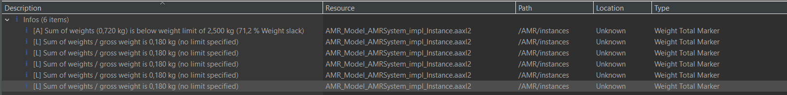
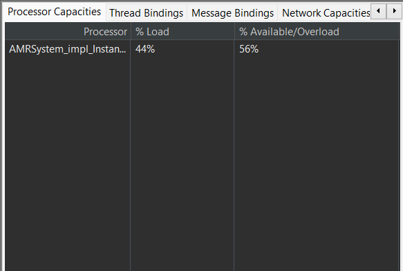

Essa análise foi feita com base no peso de cada dispositivo de hardware. O resultado mostra que a soma total do peso dos componentes não ultrapassa os limites do sistema
Essa análise foi feita com base no tempo de execução de cada tarefa. O resultado mostra que as threads em seu pior caso usam 14% das capacidades do processador.
